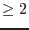

Images are stored in an array ( dimensions) in a data set. There can be multiple images in a data set. The name of the image should indicate its contents.
An image can have several associated arrays. The size of these arrays has to be identical to the image it refers to. The name of the associated array is the name of the image followed by a label indicating the contents of the arrays.